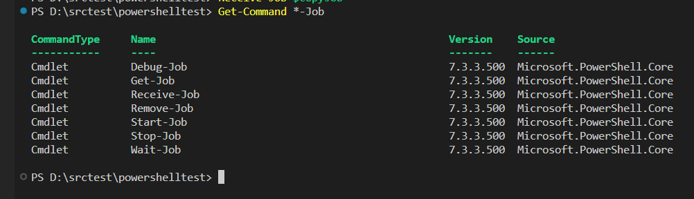
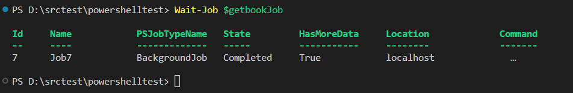
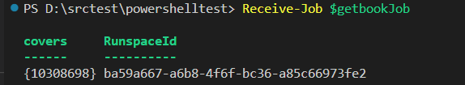

PowerShell Jobs
Command line
PS D:\srctest\powershelltest> Start-Job -Scriptblock{Invoke-WebRequest -Uri "https://openlibrary.org/works/OL20941090W.json" | ConvertFrom-Json | Select covers}
Id Name PSJobTypeName State HasMoreData Location Command
-- ---- ------------- ----- ----------- -------- -------
1 Job9 BackgroundJob Running True localhost Invoke-WebRequest -Uri "…
PS C:\Users\AdministradorCIFO> Receive-Job 1
covers RunspaceId
------ ----------
{10308698} 0f626350-35fe-4576-aeb5-c21ef3610f70
Code
Type this code and save as job1.ps1
$getBookJob = Start-Job –ScriptBlock {
Invoke-WebRequest -Uri "https://openlibrary.org/works/OL20941090W.json" | ConvertFrom-Json | Select covers
}
Run job
D:\srctest\powershelltest\job1.ps1Get-Command *-Job
to manage the jobs

Wait-Job $getBookJob

Receive-Job $getBookJob
